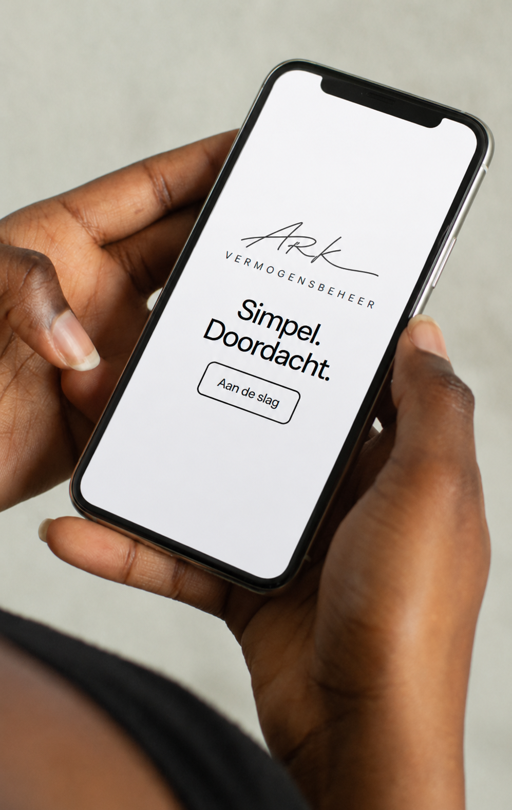

{{ tHeroTitle }}
{{ klantTitle }}
{{ klantText }}
{{ vwFrame2Title }}
Uw vermogen, altijd binnen bereik
Volg uw rendement, pas uw portefeuille aan en overleg met uw adviseur. Scan de code en zet de app op uw beginscherm.
{{ tAanbodTitle }}
{{ tWieTitle }}
{{ tWieP1 }}
{{ tWieP2 }}
{{ tKennisTitle }}
CKU-certificaat
{{ ckuIntro }}
{{ ckuFiscalBody }}
Twee rendementsprofielen
Het rendement is gekoppeld aan het risico van de gefinancierde sectoren en niet aan looptijd of bedrag.
Financiering van sectoren met het laagste risicoprofiel. De rustigste keuze.
Een evenwichtige mix van sectoren en risico. Het hoogste profiel binnen de reeks.
Bereken uw rendement
Indicatief, géén toezegging van resultaatKies uw inleg en rendementsprofiel. Wij rekenen uw rente per kwartaal en per jaar voor u uit.
Hoe werkt het?
Denk aan het klassieke boerenleenbank-principe: spaargeld van de één financiert de onderneming van de ander, met onderpand als zekerheid.
U koopt een CKU-certificaat vanaf € 50.000 en kiest uw rendementsprofiel.
Het geld wordt uitgezet in zakelijke leningen met 1e hypotheek, gespreid over ≥4 onderpanden.
Elk kwartaal ontvangt u uw rente, achteraf uitgekeerd op uw rekening.
Aan het einde van de looptijd ontvangt u uw hoofdsom terug.
Structurele bescherming (~80%)
Mandje van onderpanden. Spreiding over minimaal vier objecten beperkt het effect van één uitval.
Eerste hypothecaire zekerheid. Financiering tot 70–80% loan-to-value, met de bank van u als eerste in rang.
Pari-passu spreiding. Certificaathouders delen gelijkwaardig in de zekerheden.
Ook goed om te weten
Beleggen kent risico. Er bestaat een kleine kans op verlies of op uitstel van uitbetaling, bijvoorbeeld wanneer onderpanden minder opbrengen dan verwacht. Het CKU-certificaat valt niet onder het depositogarantiestelsel.
Wij communiceren AFM-conform: een vast rendement en structurele bescherming, maar nooit een toezegging zonder risico. Lees het volledige risicohoofdstuk in de brochure voordat u instapt.
Fiscaal aantrekkelijk over de grens
Op het rendement wordt geen Nederlandse bronbelasting ingehouden.
Het kapitaal telt niet mee voor de Belgische beleggingsbelasting.
Winst tot circa € 10.000 is vrijgesteld.
Per saldo ca. 5% belasting op het rendement. Raadpleeg uw adviseur.
Van inschrijven tot certificatenregister
Vul uw gegevens en gekozen profiel digitaal in.
Onderteken veilig via DocuSign, geen papierwerk.
Uw certificaat wordt vastgelegd in het digitale certificatenregister.
 Partnership
Partnership
Slim beleggen
{{ autoIntro }}
{{ autoFiscalBody }}
certificaat marktneutraal
Wie is Systems2follow?
Systems2follow is een Nederlands platform waarmee u belegt via de tradingsystemen van professionele, ervaren traders. U koppelt een systeem aan uw eigen effectenrekening en het systeem kopieert automatisch de transacties van de trader. U houdt altijd de controle en kunt op elk moment stoppen of wisselen.
Elk systeem heeft een heldere risicoklasse van 1 tot 7 en transparante, controleerbare resultaten. Systems2follow levert de software en de koppeling; uw geld blijft bij een gereguleerde broker op uw eigen naam.
Systemen beheerd door traders die al jaren actief zijn in de markten.
Voor elk systeem is het risiconiveau vooraf duidelijk en herkenbaar.
Alles loopt via uw eigen effectenrekening bij een gereguleerde broker.
De resultaten zijn dagelijks te volgen en volledig controleerbaar.
Twee teams, één aanpak
ARK en Systems2follow trekken samen op om de marktneutrale kern en de tradingsystemen als één geheel aan te bieden. Korte lijnen, dezelfde uitgangspunten en een gedeelde focus op transparantie en spreiding.
Een stabiele kern, met satellieten voor groei
In de samenwerking tussen ARK en Systems2follow vormt een marktneutraal product zoals het CKU-certificaat de vaste kern van uw portefeuille. Daaromheen kiest u maximaal vijf tradingsystemen van Systems2follow als satellieten.
Zo brengt u meer gewicht en spreiding aan in uw financiële portefeuille. De kern zorgt voor rust en een rendement los van de beurs, terwijl de satellieten gericht zijn op groei.
Stel uw portefeuille samen
Bepaal uw inleg en looptijd, verdeel tussen de marktneutrale CKU-kern en de satellieten van Systems2follow, en filter de systemen op risicoklasse, markt en instrument.
Wij zoeken de Systems2follow-systemen die bij uw antwoorden passen. U kiest hier hoeveel systemen u wilt volgen en met hoeveel factoren; uw adviseur koppelt daar de concrete systemen aan.
Stel uw inleg, verdeling en voorkeuren in. Wij zoeken daarna de Systems2follow-systemen die bij u passen en rekenen het verwachte rendement uit.
Belangrijke informatie & disclaimer
Indicatieve berekening, géén toezegging van resultaat. Het CKU-deel kent een vast rendement met structurele bescherming. De getoonde rendementen van de Systems2follow-systemen zijn historische gemiddelden (bron: systems2follow.com); in het verleden behaalde resultaten bieden geen garantie voor de toekomst. De indeling naar markt en instrument is indicatief. Beleggen brengt risico’s met zich mee. U kunt (een deel van) uw inleg verliezen. Bij automatisch beleggen behoudt u uw eigen effectenrekening; Systems2follow biedt uitsluitend software en een Trading API en beheert geen tegoeden.
Welke Systems2follow-systemen kunt u volgen?
Elk systeem wordt beheerd door een ervaren trader en heeft een duidelijke risicoklasse van 1 (laag) tot 7 (hoog). U volgt ze op uw eigen effectenrekening. U kunt op elk moment wisselen of stoppen.
Bron: systems2follow.com. Gem. p.j. = historisch gemiddeld rendement per jaar; Totaal = totaal behaald rendement. In het verleden behaalde resultaten bieden geen garantie voor de toekomst.
Alles onder één paraplu, niet los bij beide
U zou de kern en de satellieten ook apart kunnen afsluiten: het CKU-certificaat bij ARK en de tradingsystemen los bij Systems2follow. Maar juist door alles bij ARK samen te brengen, krijgt u samenhang, overzicht en één helder profiel.
Klaar om een stabiele kern met satellieten te combineren?
Plan een kennismaking. We stellen samen uw profiel op, kiezen de passende systemen en regelen de rest onder één paraplu.
Uw profiel is ons profiel
ARK Vermogensbeheer is opgericht door ervaren ondernemers uit de wereld van financieel advies, pensioenen en vermogensbeheer. Nuchter, vakkundig en persoonlijk. U blijft de baas over uw geld en er zijn geen verborgen kosten.
Het team
Inzichten & achtergrond
Ontvang nieuwe artikelen als eerste
Laat uw naam en e-mailadres achter en u krijgt onze nieuwste inzichten rechtstreeks in uw inbox. U kunt zich altijd weer afmelden.
U ontvangt vanaf nu onze nieuwe artikelen op {{ subEmail }}.
{{ art.title }}
{{ art.lead }}
{{ par }}
Bouw met ons aan rustig vermogen
Wij zijn een klein team dat groot denkt. Korte lijnen, echt contact met klanten en de ruimte om uw werk zelf in te richten. Herkent u zich daarin, dan horen we graag van u.
Geen lagen management. U spreekt direct met de mensen die beslissen.
Inhoudelijk werk met vermogen, fiscaliteit en toezicht. Geen belscripts.
Wij groeien. Uw ideeën over dienstverlening en techniek doen er echt toe.
Openstaande rollen
Stuur ons een open sollicitatie. Wij lezen elke brief en nemen altijd contact op.
Vijf profielen, drie bouwstenen
Welk profiel bij u past, hangt van twee dingen af: wat u met uw vermogen wilt, en wat u aan risico kunt en wilt dragen. Waar die twee uiteenlopen, is de kleinste van de twee bepalend. Hieronder staat wat elk profiel betekent en hoe het over de bouwstenen wordt verdeeld.
Een profiel is iets anders dan een levensfase. Bij vindt u de situatie waarin u zichzelf herkent; hier vindt u hoeveel risico daarbij past. Een ondernemer kan defensief zijn en een gepensioneerde offensief.
{{ profLead }}
{{ profBody }}
Dit is waar het profiel het vaakst voorkomt, geen regel. Uw situatie bepaalt de ingang, uw antwoorden bepalen het profiel.
Bij dit profiel hoort daarnaast een vierde, zeer speculatieve laag van circa {{ profSpecPct }}. Die bespreken wij uitsluitend persoonlijk. De verdeling hierboven is herschaald naar de drie bouwstenen die wij op de site aanbieden.
De drie bouwstenen
Elk profiel is opgebouwd uit dezelfde bouwstenen; alleen de verhouding verschilt. Per bouwsteen staat hieronder de risicoklasse, de bandbreedte van het rendement en waar die cijfers vandaan komen.
{{ b.desc }}
{{ b.bron }}
De genoemde percentages zijn gemiddelden over de gemeten periode, geen toezegging. In het verleden behaalde resultaten bieden geen garantie voor de toekomst en geen van de bouwstenen kent een gegarandeerd rendement. Optiesystemen kunnen gebruikmaken van margin en hefboom, waardoor verliezen sneller oplopen en bijstorting nodig kan zijn.
Het CKU-certificaat valt niet onder het depositogarantiestelsel. Bij de tradingsystemen blijft uw vermogen op uw eigen naam bij uw broker staan; wij hebben geen beschikking over uw tegoeden.
Hoe wij uw profiel vaststellen
Zeven stappen, in vaste volgorde. Kennis en ervaring toetsen wij pas als het voorlopige profiel bekend is, omdat dan duidelijk is welke bouwstenen relevant zijn.
{{ st.d }}
Ontdek uw persoonlijke verdeling
Zes korte vragen over uw leeftijd, situatie, werk, inkomen, vermogen en doel. U krijgt direct een voorgestelde verdeling tussen een stabiele kern en gerichte groei.
Welke portefeuille past bij u?
Zes korte vragen. Direct een voorstel voor uw verdeling tussen een stabiele kern en gerichte groei, als vertrekpunt voor uw gesprek.
Wat u aan risico wílt nemen is iets anders dan wat u kunt dragen. Deze drie vragen bepalen het tweede: als uw ruimte kleiner is dan uw voorkeur, is de kleinste van de twee bepalend voor uw profiel.
{{ pfName }}
{{ pfProfDesc }}
Uw voorkeur wijst naar {{ pfWillName }}, maar uw financiële ruimte reikt tot {{ pfCapName }}. Wij houden de kleinste van de twee aan, zodat een tegenvaller uw vaste lasten of uw buffer niet raakt.
{{ pfRiskDesc }}
{{ pfRiskWhy }}
Wij sturen uw profiel {{ pfName }} mee. Een adviseur neemt binnen één werkdag contact op om een kennismaking in te plannen.
{{ pfRiskWhy }}
Deze verklaring is voorlopig en op uw eigen antwoorden gebaseerd. Een definitieve geschiktheidsverklaring stellen wij pas op nadat uw vermogen en antwoorden met bewijsstukken zijn onderbouwd en uw kennis en ervaring per bouwsteen zijn getoetst. Beleggen brengt risico’s met zich mee; in het verleden behaalde resultaten bieden geen garantie voor de toekomst.
Dit is een indicatief voorstel op basis van uw antwoorden, geen persoonlijk advies. Een adviseur bekijkt samen met u wat werkelijk bij uw situatie past. In het verleden behaalde resultaten bieden geen garantie voor de toekomst.
{{ klantTitle }}
{{ klantLead }}
{{ pt.t }}
Benieuwd wat bij u past?
Plan een vrijblijvend gesprek of bekijk het product dat het beste aansluit bij uw situatie.
Certificaten van aandelen, via een stichting
Een stichting administratiekantoor houdt de aandelen van ARK. U ontvangt certificaten: u deelt mee in de waarde en ontvangt een vast rendement, terwijl de stichting het stemrecht uitoefent. Zo blijft het bestuur slagvaardig en weet u waar u aan toe bent.
Voorspelbaar, ook in een jaar zonder winst
Bij gewoon dividend verdient u alleen als het bedrijf winst maakt en die winst uitkeert. Met een vast percentage weet u vooraf wat u jaarlijks kunt verwachten. Dat rendement is geen garantie: komt ARK in financiële problemen, dan kan de uitkering uitblijven.
Groei door overnames
De opbrengst gebruiken we om bedrijven over te nemen die ons aanbod versterken. Zo bouwen we aan een bredere, sterkere vermogensbeheerder voor onze klanten en certificaathouders.
Vrijblijvend. U geeft aan met welk bedrag u ongeveer wilt deelnemen.
U ontvangt als eerste het informatiedocument en een persoonlijke uitnodiging.
Bevestig uw bedrag, rond de identificatie af en stort. Daarna ontvangt u uw certificaten.
Reserveer alvast uw plek
Uw registratie is niet bindend. Wie zich nu identificeert, kan bij opening direct inschrijven.
Indicatie bij 7% vast rendement (voorbeeld), vóór belasting.
Wettelijk verplicht voordat u kunt inschrijven. U kunt dit nu al doen, of later.
Uw belangstelling voor {{ invAmtL }} is geregistreerd. Zodra de inschrijving opent, ontvangt u het informatiedocument en een persoonlijke link.
Beleg alleen met geld dat u kunt missen
Plan een kennismaking
Liever eerst even sparren? Plan een (video-)gesprek met ons Investor Relations-team. We nemen rustig de tijd om uw situatie en wensen door te nemen.
Laat uw gegevens achter
Wij nemen binnen één werkdag contact met u op. Geen verplichtingen.
Opbouwende lijfrente
Bouw fiscaalvriendelijk vermogen op voor later. U zet op een aantrekkelijke manier geld opzij voor een pensioenaanvulling en houdt altijd de vrije beschikking over uw eigen pensioenpot. U bepaalt zelf hoe er belegd wordt, transparant en zonder verborgen kosten.
Leg fiscaalvriendelijk in en verlaag uw belastbaar inkomen binnen de wettelijke ruimte.
Uw pensioenpot staat op uw naam en u bepaalt zelf de beleggingskeuzes.
Als uw lijfrente vrijkomt, zet u eenvoudig door naar een direct ingaande lijfrente.
Direct ingaande lijfrente
Laat uw opgebouwde (lijfrente-)kapitaal periodiek aan uzelf uitkeren. U kiest zelf de looptijd en de hoogte van de uitkering, en uw kapitaal kan tijdens de uitkeringsfase belegd blijven. We nemen de mogelijkheden graag rustig met u door.
Een voorspelbare periodieke uitkering, afgestemd op uw wensen.
U kiest looptijd en hoogte die bij uw situatie passen.
Uw kapitaal kan tijdens de uitkeringsfase renderen.
Pensioenopbouw
{{ pensioenIntro }}
{{ pensioenFiscalBody }}
Alles loopt via uw eigen rekening. Wij hebben geen toegang tot uw tegoeden.
Bouw fiscaalvriendelijk op binnen de wettelijke jaarruimte voor uw pensioen.
Een eigen adviseur denkt mee over inleg, spreiding en uw pensioendoel.
BRI Beleggen
Beleggen volgens uw waarden. Biblically Responsible Investing sluit sectoren en bedrijven uit die niet passen bij Bijbelse principes, en kiest bewust voor ondernemingen die daar wél mee in lijn zijn. Zo laat u uw vermogen groeien zonder in te leveren op uw overtuiging.
Sectoren die botsen met Bijbelse principes worden uitgesloten uit uw portefeuille.
Ruimte voor ondernemingen die passen bij uw waarden, met oog op rendement.
Te combineren met de marktneutrale kern en de satellieten van Systems2follow.
Bedrijfsvermogen
Laat overtollige liquiditeit van uw onderneming renderen zonder onnodig risico. Met de marktneutrale CKU-kern en optionele satellieten van Systems2follow bouwt u ook zakelijk aan een stabiel, voorspelbaar rendement, los van de waan van de beurs.
Het CKU-certificaat levert een vast rendement, gedekt door hypothecaire zekerheden.
Voeg maximaal vijf Systems2follow-systemen toe voor extra spreiding en groei.
Volledig digitaal in te richten, met een vast aanspreekpunt voor uw onderneming.
Stuur uw portefeuille door en plan een gesprek
U bent tevreden met uw verdeling. Laat hieronder uw gegevens achter, dan beoordeelt een adviseur uw ingestelde portefeuille en neemt binnen één werkdag contact op om een gesprek in te plannen.
BSN gebruiken wij uitsluitend voor de wettelijk verplichte fiscale rapportage. Identificatie verloopt veilig via iDIN of bij uw eerste gesprek.
Uw portefeuille en gegevens gaan naar uw persoonlijke adviseur. Geen verplichtingen.
Bedankt, uw portefeuille is doorgestuurd
Uw adviseur bekijkt uw ingestelde verdeling en neemt binnen één werkdag contact met u op om een gesprek in te plannen. U ontvangt een bevestiging per e-mail.
{{ wHeading }}
{{ wIntro }}
Uw adviseur beoordeelt de aanpassing en neemt contact op om deze te bevestigen. Er verandert nog niets aan uw portefeuille.
Wijziging verstuurd
Uw voorgestelde wijziging voor {{ wKicker }} is doorgestuurd naar uw persoonlijke adviseur. U ontvangt binnen één werkdag bericht om de aanpassing te bevestigen.
Hoe wilt u beginnen?
Kies wat bij u past. Elke route eindigt met een kennismaking met uw adviseur.

{{ lgTitle }}
Log in om uw portefeuille te bekijken.
Open uw authenticator-app en vul de 6-cijferige code in die bij ARK Vermogensbeheer staat.
Koppel eenmalig een authenticator-app aan uw account. Daarna vraagt u bij elke login een nieuwe code op.
Waardeontwikkeling
per kwartaalVerdeling
Slim beleggen
met Systems2followUw core-satelliet-verdeling
strategie totaal € 86.480Een stabiele CKU-kern vormt de basis onder uw offensieve satellieten. Zo houdt u spreiding en rust, terwijl de systemen op groei zijn gericht.
Uw Systems2follow-systemen
Mijn certificaten
Rente-agenda
Mijn rekeningen
Totale waarde {{ rekTotal }}{{ rekCur.name }}
{{ rekCur.note }} Koersresultaat wordt dagelijks bijgewerkt; niet-afgewikkelde transacties kunnen het saldo tijdelijk beïnvloeden.
Documenten
Pensioenopbouw
fiscaal opbouwenUw pensioenpot groeit gestaag door. Bekijk uw inleg en het opgebouwde rendement.
Pensioenopbouw
fiscaal & op uw eigen naamUw maandelijkse inleg
U bouwt fiscaalvriendelijk pensioen op via uw eigen effectenrekening. Pas uw maandinleg aan of doe een extra storting.
Profiel
Uw vaste aanspreekpunt voor vragen over uw portefeuille, nieuwe certificaten en bijstorten.